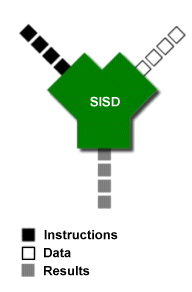

WebAssembly
Tri Nguyen | @itmn
Trond Klakken | @trondkla
What is it?
... a portable, size- and load-time-efficient binary format for executing code on the web
What is it good for?
How does it work?
Emscripten
LLVM-to-JavaScript compiler
It works as a back-end to the LLVM compiler
AST
Abstract syntax tree

Euclidean algorithm to find the greatest common divisor of a and b:
while b ≠ 0
if a > b
a := a − b
else
b := b − a
return a
Wikipedia
{kind=link}
TypeScript:
function addTwo(a: number, b: number): number {
return a + b;
}
.wast
(module
(func $addTwo (param i32 i32) (result i32)
(i32.add
(get_local 0)
(get_local 1)))
(export "addTwo" (func $addTwo)))
.wasm, assembly file
0000000: 0061 736d ; WASM_BINARY_MAGIC 0000004: 0d00 0000 ; WASM_BINARY_VERSION ; section "TYPE" (1) 0000008: 01 ; section code 0000009: 00 ; section size (guess) 000000a: 01 ; num types ; type 0 000000b: 60 ; func 000000c: 02 ; num params 000000d: 7f ; i32 000000e: 7f ; i32 000000f: 01 ; num results 0000010: 7f ; i32 0000009: 07 ; FIXUP section size ; section "FUNCTION" (3) 0000011: 03 ; section code 0000012: 00 ; section size (guess) 0000013: 01 ; num functions 0000014: 00 ; function 0 signature index 0000012: 02 ; FIXUP section size ... ...
... ...
; section "EXPORT" (7)
0000015: 07 ; section code
0000016: 00 ; section size (guess)
0000017: 01 ; num exports
0000018: 06 ; string length
0000019: 6164 6454 776f addTwo ; export name
000001f: 00 ; export kind
0000020: 00 ; export func index
0000016: 0a ; FIXUP section size
; section "CODE" (10)
0000021: 0a ; section code
0000022: 00 ; section size (guess)
0000023: 01 ; num functions
; function body 0
0000024: 00 ; func body size (guess)
0000025: 00 ; local decl count
0000026: 20 ; get_local
0000027: 00 ; local index
0000028: 20 ; get_local
0000029: 01 ; local index
000002a: 6a ; i32.add
000002b: 0b ; end
0000024: 07 ; FIXUP func body size
0000022: 09 ; FIXUP section size
Single Instruction Single Data
SISD
A + B = C
Minne:
| M0 | M1 | M2 | M3 | .. |
|---|---|---|---|---|
| A | B | C | .. | .. |
CPU registre:
| R0 | R1 | R2 | R3 | .. | R16 |
|---|---|---|---|---|---|
| A | B | C | .. | .. | .. |
Oppgave: Legg sammen 16 tall med 16 andre
- LOAD M0, R0 - Last A inn i R0 fra minne
- LOAD M1, R1 - Last B inn i R1 fra minne
- ADD R0, R1 into R2 - Legg sammen R0 + R1 og lagre i R2
- STORE R2, M2 - Skriv R2 til minne
SIMD
Single Instruction Multiple Data

 By Microsoft Edge Team
By Microsoft Edge Team
Single Instruction Multiple Data
SIMD - Vector
Oppgave: Legg sammen 16 tall med 16 andre
A1 + B1 = C1,
A2 + B2 = C2,
... ,
A16 + B16 = C16
SIMD - Vector
Minne:
| M0 | M1 | .. | M8 | M9 | .. | M16 | M17 | .. |
|---|---|---|---|---|---|---|---|---|
| A1 | A2 | .. | B1 | B2 | .. | C1 | C2 | .. |
CPU vector register
(512kb, 16 int, 8 long):
| R0 | R1 | R2 | .. |
|---|---|---|---|
| A1 , A2 , ... , A8 , | B1 , B2 , ... , B8 , | C1 , C2 , ... , C8 , | .. |
- LOAD_VECTOR M0, R0 - Laster inn 512kb som starter fra minnelokasjon M0
- LOAD_VECTOR M8, R1 - Laster inn 512kb som starter fra minnelokasjon M1
- ADD_VECTOR_INT64 R0, R1 into R2 - Legg sammen 8 longs fra R0 + R1 og lagre i R2
- STORE R2, M2 - Skriv R2 til minnelokasjonen som starter ved M2